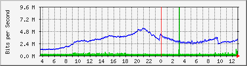
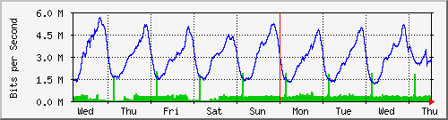
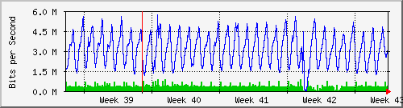
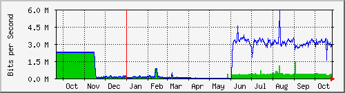

Traffic Analysis for Gi1/0/2 -- ISP-border.sky
| System: | ISP-border.sky in Stoika |
| Maintainer: | falcon@skyinet.org |
| Description: | GigabitEthernet1/0/2 NAT-vneshka-48-27 |
| ifType: | ethernetCsmacd (6) |
| ifName: | Gi1/0/2 |
| Max Speed: | 100.0 Mbits/s |
| Ip: | No Ip (No DNS name) |
The statistics were last updated Thursday, 26 October 2017 at 12:55,
at which time 'ISP-border.sky' had been up for 8 days, 10:32:46.
`Daily' Graph (5 Minute Average)

|
Max |
Average |
Current |
| In |
9560.1 kb/s (9.6%) |
354.6 kb/s (0.4%) |
668.6 kb/s (0.7%) |
| Out |
5374.4 kb/s (5.4%) |
2986.1 kb/s (3.0%) |
3212.4 kb/s (3.2%) |
`Weekly' Graph (30 Minute Average)

|
Max |
Average |
Current |
| In |
2005.7 kb/s (2.0%) |
310.7 kb/s (0.3%) |
337.6 kb/s (0.3%) |
| Out |
5611.7 kb/s (5.6%) |
2980.5 kb/s (3.0%) |
2844.2 kb/s (2.8%) |
`Monthly' Graph (2 Hour Average)

|
Max |
Average |
Current |
| In |
884.7 kb/s (0.9%) |
366.8 kb/s (0.4%) |
360.8 kb/s (0.4%) |
| Out |
5689.4 kb/s (5.7%) |
3076.0 kb/s (3.1%) |
2761.1 kb/s (2.8%) |
`Yearly' Graph (1 Day Average)

|
Max |
Average |
Current |
| In |
2267.3 kb/s (2.3%) |
558.7 kb/s (0.6%) |
360.5 kb/s (0.4%) |
| Out |
5932.2 kb/s (5.9%) |
1724.9 kb/s (1.7%) |
3049.8 kb/s (3.0%) |
| GREEN ### |
Incoming Traffic in Bits per Second |
| BLUE ### |
Outgoing Traffic in Bits per Second |